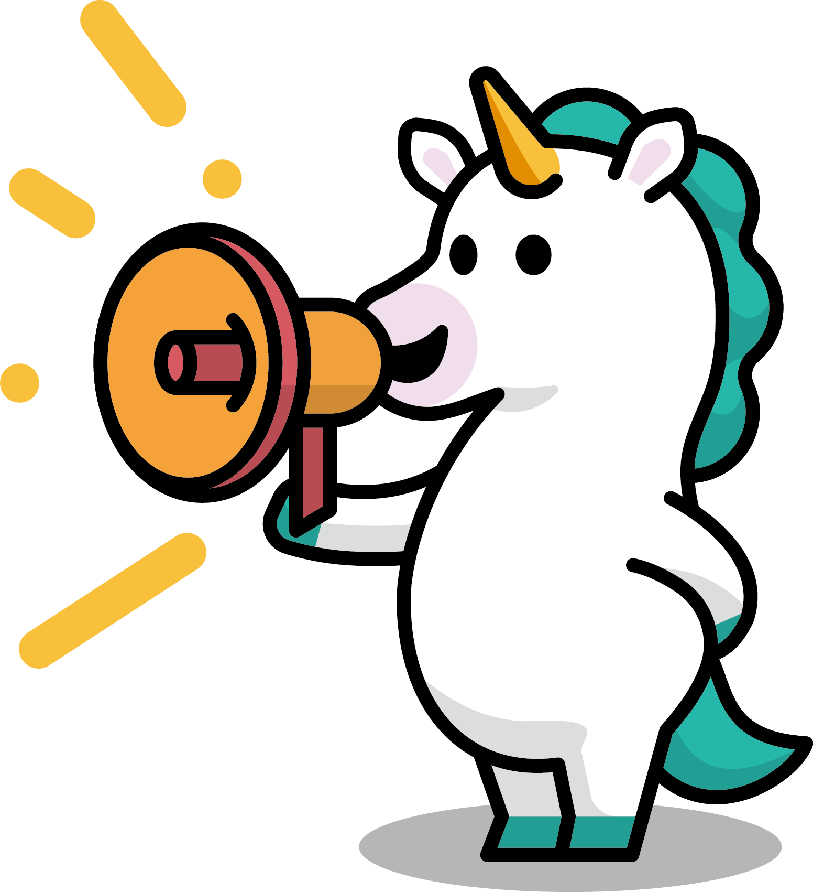

기관소개
국민소통
정보공개
KoAT소식
농산업정보
주요사업
ESG경영
소개
인사말
미션 & 비전
KOAT인재상
연혁
조직 및 부서소개
경영진 동정
로고(CI)
캐릭터
찾아오시는 길
고객헌장
공공데이터 개방
사업실명제
고객참여
고객의소리(민원)
규제애로신고
국민제안
개인정보 열람·청구
채용지원
정보공개
공지사항
사업공고
입찰정보
채용공고
홍보자료
기술정보
스마트팜 표준 정보
지원기업정보
MOU현황
자료실
기술사업화
벤처창업
종자사업
스마트농업
농업환경분석
비전
환경경영
안전경영
내부통제
동반성장
사회공헌
인권경영
투명경영
윤리경영
E-농업이란 무엇인가
지속 가능한 농업을 위한 디지털 파워 활용
농업 거래의 도전과 기회
도전과 기회를 이해하는 것이 성공에 필수적
핵심으로 향하는 발걸음
농업 개발은 다각적이고 역동적인 과정
증명발급신청
농기계검정 서식 안내
견학신청
알림마당
KOAT 소식
공지사항
사업공고
입찰정보
채용공고
2024년도 공공기관 고객만족도 조사
관련 개인정보처리의 위탁사항 알림
2024-12-16
2024년 하반기 저탄소 농산물 인증사업
인증서 발급 대상자 공고
2024-12-03
한국농업기술진흥원 ESG 중대성평가
및 핵심이슈
2024-09-30
개인정보처리방침 변경 알림
2024-08-28
2025년 기술융복합 현장적용 사업 공고
2024-12-26
2025년 저탄소 농산물 인증제 농업인
교육 참여 희망 농가 모집 공고
2024-12-24
2024년 하반기 저탄소 농산물 인증사업
인증서 발급 대상자 공고
2024-12-04
「2025년 데이터 기반 스마트농업
확산지원 사업」컨소시엄 모집 공고
2024-12-02
건물(창고시설) 및 지상권 매각 일반
경쟁입찰 공고(2024-2)
2024-12-10
건물(창고시설) 및 지상권 매각 일반
경쟁입찰 공고(2024-1)
2024-10-25
2024년 상반기 국유특허 전용실시권
입찰공고(농축산분야)(연장)
2024-10-21
용역 구매 입찰 공고 (2024년 농업
신기술 산학협력지원사업 성과조사)
2024-09-26
2024년 제2차 환경미화(기간제근로자)
채용 최종합격자 발표 및 등록 안내
2024-12-25
2024년 한국농업기술진흥원 제4차
전문계약직 채용(제한경쟁) 재공고
2024-12-23
2024년 제2차 환경미화 기간제근로자
(일반계약직)채용 서류전형 합격자 발표
2024-12-17
한국농업기술진흥원 비상임이사
초빙 공고
2024-12-16

주요사업
한국농업기술진흥원은 농식품산업의 새로운 가치창출을 지원합니다.
농업인, 대학과 민간기업, 지자체가 개발한 연구성과의 산업적 진흥을 촉진하고,
산업화를 지원하여 "농업기술 혁신 · 미래농업선도" 구현에 앞장서겠습니다.
관련사이트 바로가기
원하는 기관의 정보를 확인해 보세요.
분석검정센터
기술평가도움
시스템
스마트
그린푸드
농식품창업
정보방
종자산업
진흥센터
종자광장
농기계정보
광장
농업기술사업화
종합정보망
ENG Sub, [파종: 실한 것이 나왔다] ep1. 농사가 불가능한 악지 속에서 싹이 나왔다?
@미디어 with
KoAT소식
송아지 폐사율 확 줄인다.
정밀긴단기술 개발
2024.12.13
오묘하게 생겼네?
포인세티아 꽃의 비밀
2024.12.18